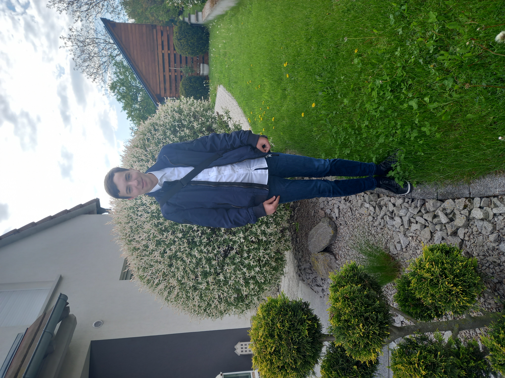
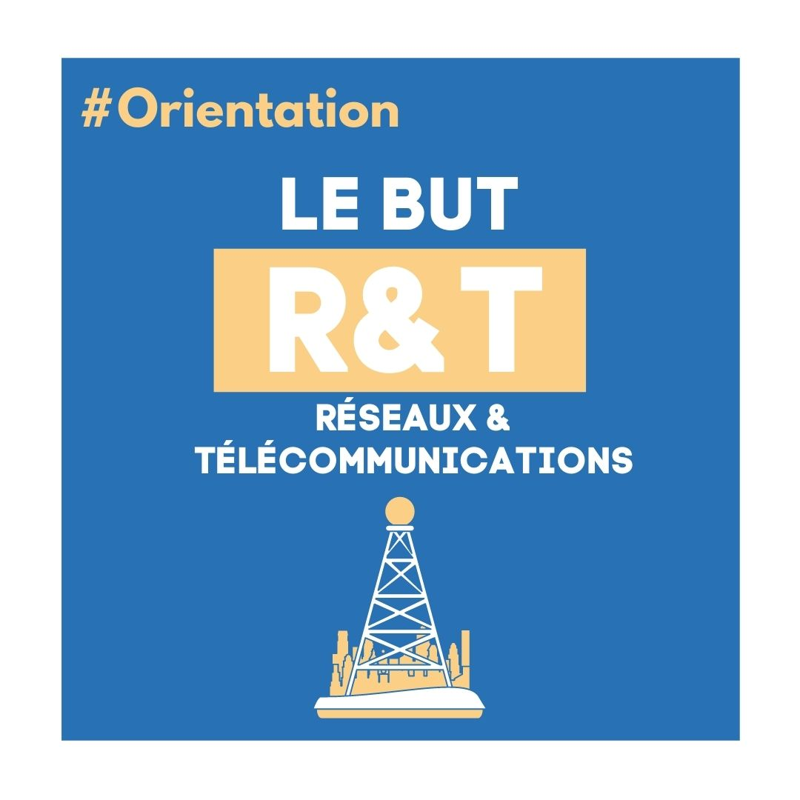
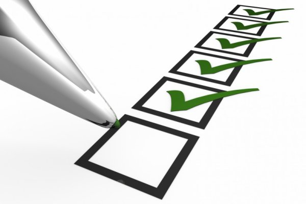
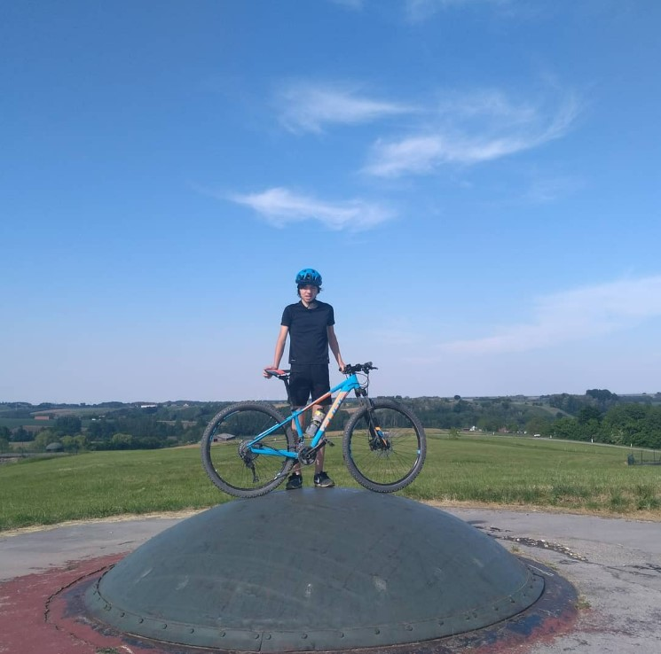

Olivier Guittet
Hello I am Guittet Olivier and this is my website
On this website you will find information about my professional and personal activities.
Above the link you can access the information about my hobbies.
My History

Personal background:
My name is Guittet Olivier, i was born on 17 November 2004 in Wissembourg, a small town in the north
of the Bas-Rhin.
In the north of the Bas-Rhin. I live in Soultz sous Foret, a village in the Bas-Rhin. I have several
hobbies, the
trumpet which i have been playing since i was 8 years old.
I also like history and geopolitics and of course electro-technology and computers. I also have
other hobbies that you can discover on the page my hobbies.
Academic background :
From kindergarten to secondary school i followed a bilingual pathway where i obtained my brevet in
French and
German and my A2 certification in German. At the Lycée Stanislas in Wissembourg i then
did
a 2nde Euro then i did a Bac Technologique STI2D option SIN. In 2022 i obtained my Bac with
with honours and joined the BUT Network and Telecommunications course at the IUT in Colmar.
Why did i join the BUT RT?
I joined the BUT Networks and Telecoms because i have always been interested in electrical
engineering and computing. My grandfather was an electrical engineering teacher and my father is a
laser technician. I have been immersed in electrical engineering since i was a child. In collège, i
lost interest. Then, in seconde of lycée, i got interested again and discovered programming in
Python and C. At the same time, i did some basic electrical assembly with my grandfather. In the
same year i did a voluntary internship at the Elektronikzentrum of the Bundeswehr in Bad Bergzabern.
I went into STI2D and got really interested. Then i decided to apply to the BUT RT because i was
very interested in cyber security and there was both electrical engineering and computer science,
which i prefer.

My Goals

Personal objectives:
My goals are to succeed in my professional objectives but also to pass my diploma of mountain
leader. I would also like to do some long hikes like Santiago de Compostela or the GR20. I would
also like to climb the El Capitan cliff in Yosemite Park in the USA.
Professional goals:
My first goal is to join the ICS. Then either to join an engineering school with a specialization in
cybersecurity or to enter the working world.
